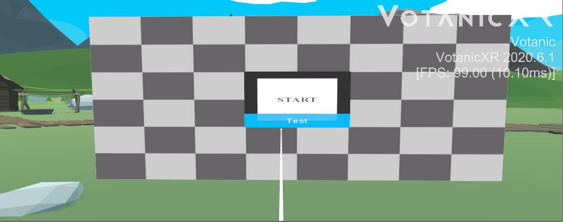
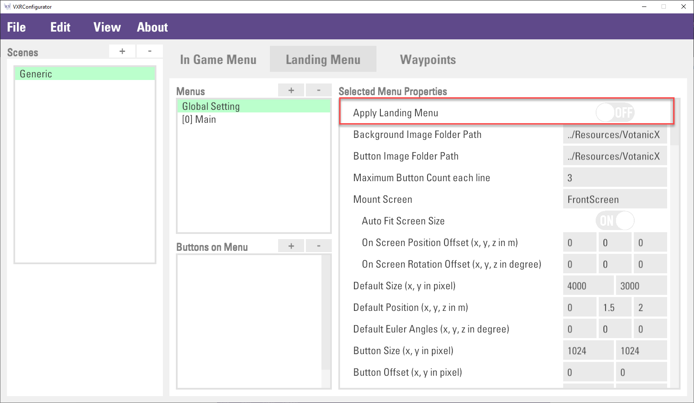

Multi-User Networking
In this article
Objective
This chapter introduces the Multi-User Networking module provided by VotanicXR. By using the provided networking manager, synchronize application can be easier to implement.
Multi-User Networking Features in VotanicXR
In addition to the traditional networking, XR Network Manager provides the Entity Synchronization feature.
Users can see each other with the entity models in the multi-user application, the entity models will be synchronized.
Set up Multi-User Networking Sample Scene
Open Sample Scene
Go to Assets > Votanic > VotanicXR_Tutorial > Tutorial07_Networking and open the scene MultiUserNetworking provided.
Install Multiplayer HLAPI (for Unity 2019)
If you are using Unity Editor with version 2018, please skip this part.
If you are using Unity Editor with version 2019 or above, please use the configuration below.
Go to Package Manager and install
Multiplayer HLAPIbefore import the VotanicXR SDK Package.
Import the Votanic SDK package with Net feature, with format
VotanicXR_2020.5.12f2 for 2019.2+ [Net].unitypackage.
Using XR Networking Manager
XR Network Manager provides traditional networking features and the Entity Synchronization feature, to implement the multi-user application.
Add XR Network Manager
The XR Network Manager Prefab is a gameObject with the V Gear_Networking (Script) component only.
To add the XR Network Manager Prefab,
Right-click
vGear > GameObject > XR Network Manager.
Build the application and name the application
Server Clientfor the test later.
Configure Network Manager
To configure the XR Network Manager, we can configure the settings in inspecter or through the Networking Json.
The V Gear_Networking(Script) component of XRNetworkManager

The V Gear_Networking(Script) component can be classified into six main parts.
[Settings] stores the server hosting related settings, including ip address, connections.etc.
[Host] and [Client] store the messages of the host and client sent when they participate into the server.
[Components] stores the prefab of the user when they are joining to the server.
[Status] stores the status of the server, can be called through API.
[XR Settings] stores the Data Path of the Networking Json and the Entity related settings.
[XR Components] stores the prefab of the entity to be displayed.
Networking Json
The Networking Json is a setting json file to save the networking settings for a built application.
After the application built, create a folder named Resources next to the build folder, and save the provided Networking.json file into the resources folder.
The built executable will read the Networking Json of the corresponding file path saved in the V Gear_Networking(Script) component.
For the server host application, remain the json content.
For the server client application, change the json content into following.
{
"Type": "Client",
"IP": "localhost",
"Port": 7777,
"UserName": "Client",
"AutoConnect": true,
"Reconnect": 5,
"Buffer": 3.0,
"Head": 1,
"RightHand": 1,
"LeftHand": 2,
"HeadEntity": "Head",
"RightHandEntity": "Hand",
"LeftHandEntity": "Hand2",
"EntityDisplay": "OthersEntities",
"IdentityDisplay": "OthersName"
}
The first 7 lines corresponding to [Settings] and remaining corresponding to [XR Setting], detail will be described in Detail of Network Manager.
Network Setting
The [Settings] stores the server hosting related settings.
Developer can set the ip address and port for the server, the network name, maximum connections and the connecting setting of the application.
Some of the settings of Network Setting can be configured in the Networking Json, thus re-build is not needed for configuring the Network Setting.
Here, set the Network Name to Host for the later sections.
Network Host vs Client
A Multi-User Networking Application should be held with a server host for the client.
To test for the multi-user application connection, the sample of using localhost is shown below:
Enter Play Mode, the server is hosted by Unity Editor.
Server host message will be sent with the message in [Host], similarly server client will send the join message with [Client].

Use the project built above with configured networking json, the connection can be tested with locolhost.
Note that adjust the firewall setting for the connection of localhost, and there will be conflict to enter the game with using the same role system.
We recommand to use the same build for the synchronization between host and client interactions.
Network Entities
The Network Entities are the entities to be seen by the user in the server.
The default entities to be shown are Head, Right Hand and Left Hand.
The entity prefabs is stored [XR Components] lists and can be configured at the Networking Json with corresponding index.
The sample networking json above uses the second head prefab at the Head list, second right-hand prefab at the Right Hand list and the third left-hand prefab at the Left Hand list.

Add Networked Objects
The gameObjects will be synchronized with using Network Object class.
To add the Network Object (Script) Component.
Right click the gameObject
Networked Cube,vGear > Component > NetworkObject.Two components is added into the gameObject, they are
Network Identity (Script) (Deprecated)andNetworked Object (Script).
To enable the accesibility of client, enable the
Local Player Authorityoption ofNetwork Identity (Script) (Deprecated).Setting of
Networked Objectclass can be set in theNetworked Object (Script)or through API.Add
V Gear_Interactable (Script)component to the gameObjectNetworked Cubeand enable optionGrabbable.
The result of the synchronize object of the built projects is shown below.

Send & Receive Networked Command
Beside the additional setting provided by VotanicXR, this part introduces the traditional network feature, Send and Receive commands between Server and Client.
The following simple sample sends the message from client to the server, the server prints the message when it receives message.
The script below send a message when the client press Y.
void Update()
{
if (vGear.Cmd.Received("PressY") && manager.networkName.Equals("Client"))
{
manager.Send("Client said hi!");
}
}
The message will be printed when the network manager received a message by default.

The script below print the message with prefix Delegate : when the manager of server host received a message into the delegate funtion.
vGear_Networking.ReceivedMessage is the delegate function on the message received, declaration is introduced at API.
public vGear_Networking manager;
private void Start()
{
manager.ReceivedMessage = PrintReceive;
}
void PrintReceive(string message)
{
if (manager.networkName.Equals("Host"))
{
Debug.Log("Delegate :" + message);
}
}
The log printed will be as shown below.
